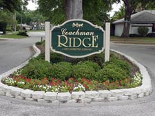

City of Clearwater, FL
Home MenuGovernment » City Departments » Planning & Development » Long Range Planning » Adopted Long-Range Plans
Coachman Ridge

This special area plan defines the neighborhood’s vision and provides the framework for neighborhood efforts to maintain Coachman Ridge as a desirable neighborhood. It is the basis for the implementation of the Coachman Ridge Neighborhood Conservation Overlay District in the Clearwater Community Development Code and is used to coordinate public and private initiatives in the neighborhood.
Prepared by the Coachman Ridge Neighborhood & Clearwater Planning Department, July 3, 2001
For more information about the Coachman Ridge Neighborhood Plan, please contact the Planning and Development Department at 727-562-4567.
Neighborhood Conservation Overlay District
In 1999 the City of Clearwater implemented a new planning tool known as the Neighborhood Conservation Overlay District (NCOD). The purpose of this designation is to provide a means of ensuring that infill and redevelopment activities in existing, stable neighborhoods are consistent with the protection of the existing character of the neighborhood. The designation calls for the preparation of a special area plan for the neighborhood that includes goals and objectives as well as development standards that are necessary and appropriate to protect the health, safety and welfare of the neighborhood. Once the plan is prepared and approved by the City Commission, the NCOD is identified on the City’s zoning atlas and in the Community Development Code. The Coachman Ridge Neighborhood Association is the first neighborhood group in the City to initiate this planning process and take advantage of the NCOD provisions.
Coachman Ridge Neighborhood Planning Process
Coachman Ridge is an established and stable neighborhood that has experienced increasing property values over the years. The Coachman Ridge Homeowners Association became interested in the NCOD due to the voluntary nature of the Association and the potential difficulty in the enforcement of neighborhood standards. The Association expressed concern that lack of compliance with deed restrictions would alter the established character of the neighborhood and possibly result in a decline in property values and neighborhood quality of life.
In August 2000 the Coachman Ridge Homeowners Association distributed a letter to all properties within the neighborhood explaining the NCOD. The letter also included a petition asking property owners whether or not they wanted to initiate the NCOD process for Coachman Ridge. Residents overwhelmingly endorsed the petition with 190 homeowners out of a total of 255 owners voting “yes” to proceed. This represents seventy-four percent (74%) of the neighborhood compared to the sixty percent (60%) approval rate required by the Clearwater Community Development Code. Only ten (10) homeowners voted “no” and fifty-five (55) did not vote.
The Coachman Ridge neighborhood submitted an application for NCOD designation and the required petition to the City on October 25, 2000. At the January 16, 2001 meeting, the Clearwater City Commission held a public meeting and determined that Coachman Ridge met the criteria set forth in the Community Development Code. The Commission’s action authorized the neighborhood to proceed with the NCOD planning process. The Commission appointed the requisite study committee, which was comprised of ten (10) neighborhood residents.
The Coachman Ridge neighborhood, in conjunction with city staff, held a total of five public meetings between February 2001 and May 2001. At the first meeting, residents identified strengths and weaknesses associated with their neighborhood and prioritized the issues identified. At the second and third meetings, residents developed goals and objectives to enhance neighborhood strengths and minimize neighborhood weaknesses. The fourth meeting was dedicated to reviewing the neighborhood’s deed restrictions and identifying development standards that should be included in the Coachman Ridge NCOD overlay provisions. At the fifth meeting, the neighborhood reviewed the final plan and agreed to submit it to the City for approval. Throughout the neighborhood planning process the study committee met with City staff to guide the process, establish a format for meetings and provide direction in the development of the Plan.
Neighborhood Plan Purpose
The purpose of the Coachman Ridge neighborhood plan is to provide a framework for neighborhood enhancement and change. It will serve as an official document for Coachman Ridge and the City of Clearwater. It should be used to coordinate public and private initiatives, as well as to provide the basis for the implementation of development standards unique to the neighborhood.
EXISTING CONDITIONS
Neighborhood Location and Character
The Coachman Ridge neighborhood is approximately 159 acres in area and consists of 255 parcels. It is centrally located within the City of Clearwater. It is bounded by Old Coachman Road on the southwest, N.E. Coachman Road on the southeast, a Florida Power right-of-way on the east and Coachman Lake Estates to the north. Map 1 depicts the general location of this neighborhood and Map 2 illustrates the neighborhood planning area.
The Coachman Ridge neighborhood is surrounded by a variety of land uses. To the immediate north are single-family homes and to the immediate east is a Florida Power Corporation right-of-way occupied by transmission lines. To the east of this right-of-way is Wal-Mart and Cameron Lakes Apartments. To the southeast are two multi-family developments known as Coachman Crossing and Town Place Apartments. To the south of the neighborhood are the C.S.X. Railroad Lines, Northeast Coachman Park, and Coachman Ridge Park. There is a trail at Coachman Ridge Park that provides a connection west to the Long Center, which fronts on Belcher Road. There is also a fruit stand located at the southwest corner of the intersection of Old Coachman Road and N.E. Coachman Road and to the west are the Alcove Mobile Home Park and other single-family development.
Coachman Ridge was platted in three phases between 1983 and 1984. There is no vacant land within the neighborhood and all 255 lots are occupied with single-family dwellings. The majority of properties (242 parcels) are zoned Low Medium Density Residential and have a future land use designation of Residential Low, which allows 5 dwelling units per acre. The remaining thirteen (13) properties located in the most northwesterly portion of the subdivision are zoned Low Density Residential and have an underlying future land use category of Residential Suburban. This designation permits a density of 2.5 dwelling units per acre. Map 3 depicts the existing zoning of Coachman Ridge.
Coachman Ridge is a deed-restricted community. It has a variety of architectural styles and the minimum home size is 1800 square feet in area. All homes have attached garages and many have three or four bedrooms and swimming pools. Mature landscaping and well maintained properties are found throughout the neighborhood. According to the Pinellas County Property Appraiser, property values average 12% above citywide property values. As of Fall 2000, less than 10% of the properties within Coachman Ridge had outstanding code violations. The most commonly found violations involved excessive watering, fences, pool maintenance, unlicensed vehicles, overgrown weeds and vehicles parked over sidewalks.
There are three (3) entrances into Coachman Ridge. One is located off of N.E. Coachman Road at El Tair Trail. The other two entrances are along Old Coachman Road at Farrier Trail and at Wetherington Road. There are landscaped medians at the entrances on El Tair Trail and Farrier Trail and all three entrances have neighborhood signage. The Coachman Ridge Homeowners Association maintains these improvements.
The majority of rights-of-way in Coachman Ridge are fifty (50) feet in width with wider areas located at the neighborhood entrances at El Tair Trail and Farrier Trail. El Tair Trail is the only right-of-way that is sixty (60) feet in width. Street pavements are typically twenty-two (22) to twenty-four (24) feet in width. There is a continuous sidewalk system within Coachman Ridge, as well as curbs. Standard Florida Power lighting is located along the streets and all utilities are underground with the exception of above ground utility boxes. Several retention ponds are located within Coachman Ridge, all of which are on private property, and a portion of Channel F of Alligator Creek is located within the northwestern portion of the neighborhood. All infrastructure is in average to good condition, with the exception of several streets that need to be resurfaced.
Coachman Ridge Homeowners Association
The Coachman Ridge neighborhood was developed with deed restrictions, however, no neighborhood association was created. In the early years of the subdivision, residents wanted to find a way to help neighbors get acquainted with one another. In 1985 residents formed a voluntary neighborhood association that was incorporated in 1986. The purpose of the Coachman Ridge Neighborhood Association as set forth in the Articles of Incorporation is “for the betterment of the neighborhood and the furtherance of community spirit, and to promote the health, safety, and welfare of the residents of those certain tracts of land known as Coachman Ridge.” The Association has all of the powers typically held by neighborhood associations except that it is not empowered to sue any homeowner residing in the neighborhood.
Over the years the Association has sponsored many social activities ranging from holiday gatherings, garage sales, day trips and monthly meetings. At present the Association holds an annual neighborhood garage sale, association meetings and an annual membership drive. It has a welcome committee that greets all new residents and invites them to join the Association. It also produces a neighborhood directory and publishes a newsletter four – six times a year. The voluntary Coachman Ridge Homeowners Association has been very successful at getting property owners to join and enjoys a membership rate of approximately eighty percent (80%) of the total properties.
Coachman Ridge Neighborhood Watch
The Coachman Ridge Neighborhood Watch was formed in 1984 and is a component of the Homeowners Association. The program, which is sponsored by the Clearwater Police Department, is designed to enhance neighborhood security, to
heighten the community’s power of observation and to encourage mutual assistance and concern among neighbors. The Coachman Ridge Neighborhood Watch has sixteen (16) block captains, a neighborhood watch coordinator, as well as a back-up coordinator.
Projects Proposed in the Neighborhood Vicinity
Florida Power Trail
In 1996 the Bicycle Advisory Committee of the Metropolitan Planning Organization initiated a series of discussions regarding the possibility of a Florida Power Corridor Trail. Over the next several years, work proceeded on this idea and in 1999 Florida Power and the Pinellas County Board of Commissioners agreed to the development and construction of the Florida Power Trail within existing Florida Power rights-of-way. This 20.6-mile corridor will begin at the intersection of Tampa Road and McMullen-Booth Road and proceed west and then south and ultimately end at the Weedon Island Preserve near I-275 and Gandy Boulevard. The trail will provide bicycle and pedestrian opportunities in a portion of the County that is not currently served by the County’s trail system. The facility will consist of a twenty-five (25) foot easement area, which will support a fifteen (15) foot wide paved trail with five (5) foot wide buffers on each side. Amenities such as benches, water fountains, landscaping and informational signage will be located along the trail within buffer areas.
Community Sports Complex
Construction of a new community sports complex, which will be used as the Philadelphia Phillies Major League Spring Training facility and home of the Clearwater Phillies Minor League team, is scheduled to begin in October 2001 at the northwest corner of Drew Street and Old Coachman Road. The facility will be an open air, natural grass ballpark meeting first class Major League Baseball spring training standards. There will be approximately 7,000 fixed seats and an outfield berm seating area for close to 1,000 fans. The ballpark will also
accommodate all clubhouse facilities, batting tunnel, team office space and other elements typically found at a stadium. The site will also support one full size lighted practice field, one practice infield and parking for 1,175 vehicles. Construction is projected to be complete by January 2003.
NEIGHBORHOOD STRENGTHS AND WEAKNESSES
At the first public neighborhood meeting held by the study committee on March 22, 2001, participants divided up into three groups and brainstormed about the strengths and weaknesses of Coachman Ridge. Each group presented their list of strengths and weaknesses to the entire group and then each participant was asked to prioritize the issues by identifying the three most important strengths and three most important weaknesses. Coachman Ridge residents identified the following issues as the neighborhoods’ priority strengths and weaknesses.
Coachman Ridge Strengths
- Neighborhood Location- Coachman Ridge residents ranked neighborhood location as the most important strength. The neighborhood is centrally located near US 19, which serves as the primary north-south transportation route in Pinellas County. Coachman Ridge is in close proximity to places of work, worship, schools, shopping, parks and trails, which makes its location attractive to potential residents. It is also minutes from Clearwater Beach, the St. Petersburg/Clearwater International Airport and Tampa International Airport.
- Neighborhood Character- Neighborhood character was identified as a significant neighborhood strength. Coachman Ridge residents place a high value on the variety of architectural styles found in the neighborhood and the lot and house sizes required by the deed restrictions. Well-maintained property and mature landscaping are viewed as defining characteristics of Coachman Ridge, as well as underground utilities.
- Neighborhood Infrastructure - Quality infrastructure is regarded as another important neighborhood strength. Residents like the loop and curvilinear streets that keep traffic slow and prevent neighborhood streets from being used as cut-through streets. The construction of the Stag Run Boulevard cul-de-sac was identified as the most positive aspect of the neighborhood’s infrastructure. Stag Run Boulevard was a through street that provided an alternative traffic route from U.S. 19 to Old Coachman Road. Over the years the City received complaints about people parking along the eastern portion of the roadway, speeding and cut-through traffic. The issue came to the forefront when plans emerged for the construction of the Wal-Mart. During the site plan review process Wal-Mart agreed to construct the cul-de-sac as part of its development and it was completed in 1994. Properly functioning drainage is also regarded as an important neighborhood feature, as well as the continuous sidewalk system.
- Neighborhood Security/Safety - Residents attending the brainstorming session believe Coachman Ridge is a very quiet and safe neighborhood, and feel secure living in the neighborhood. Residents noted that they experienced very quick response times from the Clearwater Police Department and 911. Residents are also supportive of the Coachman Ridge Neighborhood Watch program, which they believe is an asset to the neighborhood.
- Property Values - Property values in Coachman Ridge have been steadily increasing over the years. As stated in the existing conditions section of the Plan, Coachman Ridge property values average 12% above citywide property values. Increasing property values are very important to Coachman Ridge property owners. They believe that all of the identified priority strengths contribute to neighborhood stability and the above average property values found in the neighborhood.
Coachman Ridge Weaknesses
- Possible Impacts of Community Sports Complex - Coachman Ridge residents are concerned about the possible impacts of the new community sports complex. Of particular concern is the ability of Old Coachman Road and N.E. Coachman Road to accommodate additional traffic generated by complex events. Currently, during peak travel times, ingress and egress from Coachman Ridge is difficult. Residents fear that increased traffic, as a result of complex events, will create more congestion and have a negative impact on their quality of life. Residents are also apprehensive about other potential impacts such as increased noise, crime and litter. Lastly, Coachman Ridge is concerned about the types of events, other than baseball, that will occur in the complex.
- Neighborhood Perimeter - The perimeter of Coachman Ridge received an extensive amount of discussion, as well as consensus. The lack of a uniform wall around the neighborhood is an issue which neighbors agree needs to be addressed. Many residents believe that some of the existing wooden fences are old, unattractive and in disrepair. They are concerned about the effect piecemeal fence replacement will have on neighborhood appearance and image.
- The proposed construction of the Florida Power Trail, which will be on the eastern edge of the neighborhood, troubles some residents. There is fear that the trail may bring litter and crime into the neighborhood because there will be a new, less visible means of access into Coachman Ridge.
Residents believe the increased activity that the new community sports complex and Florida Power Trail will bring to the surrounding neighborhood intensifies the need for perimeter fencing that will increase safety and provide noise abatement.
Another perimeter issue identified is the lack of sidewalks on the north side of N.E. Coachman Road and on the east side of Old Coachman Road adjacent to the Coachman Ridge neighborhood. Due to the significant amount of traffic on these roadways, the neighborhood has been working with the Florida Department of Transportation to get sidewalks constructed. Residents view the lack of sidewalks in these rights-of-way as an important perimeter safety issue that needs to be resolved.
Three other perimeter issues were identified as weaknesses. One is overgrown vegetation surrounding the neighborhood and in particular in the Florida Power right-of-way. Another is the lack of maintenance and litter control on N.E. Coachman and Old Coachman Roads. The other issue is noise associated with US 19, airplanes, perimeter traffic and Wal-Mart.
- The proposed construction of the Florida Power Trail, which will be on the eastern edge of the neighborhood, troubles some residents. There is fear that the trail may bring litter and crime into the neighborhood because there will be a new, less visible means of access into Coachman Ridge.
- Traffic and Parking - The volume of traffic on Old Coachman Road and N.E. Coachman Road has become a major concern of Coachman Ridge residents. Since there are no turning lanes on either of these streets, traffic backs up during peak periods when cars are trying to make left turns. This congestion blocks neighborhood entrances, making it difficult to get in and out of the neighborhood. This problem is most evident at the intersection of El Tair Trail and N.E. Coachman Road and was documented in the traffic study conducted for the new community sports complex. Speeding on N.E. Coachman Road was another problem identified by Coachman Ridge residents.
- Several issues related to parking were identified as neighborhood weaknesses. Residents believe that when cars are parked on both sides of the street directly across from one another, it is difficult for cars to drive through. Another parking issue discussed is when cars park in such a manner as to block sidewalks. When this occurs, pedestrians cannot use the sidewalk and in many instances are forced to use the street.
Another parking issue discussed is the parking of vehicles outside of garages, although there is sensitivity to the fact that today’s vehicles do not always fit inside garages or a family may have more vehicles than the garage can accommodate. There was overwhelming consensus that boats, trailers, recreational vehicles and commercial vehicles continue to be parked inside garages as required by the deed restrictions. The only other parking issue noted was the late night parking that occasionally occurs at the Stag Run Boulevard cul-de-sac.
- Several issues related to parking were identified as neighborhood weaknesses. Residents believe that when cars are parked on both sides of the street directly across from one another, it is difficult for cars to drive through. Another parking issue discussed is when cars park in such a manner as to block sidewalks. When this occurs, pedestrians cannot use the sidewalk and in many instances are forced to use the street.
- Property Maintenance - Many properties are well maintained in the Coachman Ridge neighborhood; however, poor property maintenance evident in some homes is viewed as a significant weakness. Residents believe that unkempt properties have a negative impact on neighborhood appearance and value. Residents discussed specific areas of maintenance that cause particular concern. This discussion centered on roofs with mildew, rust stains on homes and sidewalks, fence maintenance and yard maintenance i.e. overgrown and dead landscaping and fruit tree maintenance.
- Voluntary Homeowners Association - Residents ranked having a voluntary homeowners association as a weakness. Because the association is not mandatory, the Coachman Ridge Homeowners Association cannot rely on mandatory dues. This is a problem because the Association has been responsible for planting and maintaining landscaping at the neighborhood entrances, publishing a neighborhood directory and newsletter, etc. Every year the Association must have a membership drive to secure funds to continue its activities. Another weakness of a voluntary association pointed out by some residents is its lack of authority compared to the board of a mandatory association especially when enforcing deed restrictions. The voluntary Coachman Ridge Homeowners Association does enforce deed restrictions, however, strict enforcement can only occur if neighbors litigate.
- Lack of Reclaimed Water - Since quality landscaping and lawn maintenance is an important characteristic of Coachman Ridge, the inability of residents to get reclaimed water is an issue. Having to rely on potable water for lawn maintenance is expensive and is limiting due to the restriction on the number of days one can water. Residents believe as the drought continues or if water costs rise, they will not be able to maintain their property to meet neighborhood standards.
At the first public neighborhood meeting held by the study committee on March 22, 2001, participants divided up into three groups and brainstormed about the strengths and weaknesses of Coachman Ridge. Each group presented their list of strengths and weaknesses to the entire group and then each participant was asked to prioritize the issues by identifying the three most important strengths and three most important weaknesses. Coachman Ridge residents identified the following issues as the neighborhoods’ priority strengths and weaknesses.
Coachman Ridge Strengths
- Neighborhood Location- Coachman Ridge residents ranked neighborhood location as the most important strength. The neighborhood is centrally located near US 19, which serves as the primary north-south transportation route in Pinellas County. Coachman Ridge is in close proximity to places of work, worship, schools, shopping, parks and trails, which makes its location attractive to potential residents. It is also minutes from Clearwater Beach, the St. Petersburg/Clearwater International Airport and Tampa International Airport.
- Neighborhood Character- Neighborhood character was identified as a significant neighborhood strength. Coachman Ridge residents place a high value on the variety of architectural styles found in the neighborhood and the lot and house sizes required by the deed restrictions. Well-maintained property and mature landscaping are viewed as defining characteristics of Coachman Ridge, as well as underground utilities.
- Neighborhood Infrastructure - Quality infrastructure is regarded as another important neighborhood strength. Residents like the loop and curvilinear streets that keep traffic slow and prevent neighborhood streets from being used as cut-through streets. The construction of the Stag Run Boulevard cul-de-sac was identified as the most positive aspect of the neighborhood’s infrastructure. Stag Run Boulevard was a through street that provided an alternative traffic route from U.S. 19 to Old Coachman Road. Over the years the City received complaints about people parking along the eastern portion of the roadway, speeding and cut-through traffic. The issue came to the forefront when plans emerged for the construction of the Wal-Mart. During the site plan review process Wal-Mart agreed to construct the cul-de-sac as part of its development and it was completed in 1994. Properly functioning drainage is also regarded as an important neighborhood feature, as well as the continuous sidewalk system.
- Neighborhood Security/Safety - Residents attending the brainstorming session believe Coachman Ridge is a very quiet and safe neighborhood, and feel secure living in the neighborhood. Residents noted that they experienced very quick response times from the Clearwater Police Department and 911. Residents are also supportive of the Coachman Ridge Neighborhood Watch program, which they believe is an asset to the neighborhood.
- Property Values - Property values in Coachman Ridge have been steadily increasing over the years. As stated in the existing conditions section of the Plan, Coachman Ridge property values average 12% above citywide property values. Increasing property values are very important to Coachman Ridge property owners. They believe that all of the identified priority strengths contribute to neighborhood stability and the above average property values found in the neighborhood.
Coachman Ridge Weaknesses
- Possible Impacts of Community Sports Complex - Coachman Ridge residents are concerned about the possible impacts of the new community sports complex. Of particular concern is the ability of Old Coachman Road and N.E. Coachman Road to accommodate additional traffic generated by complex events. Currently, during peak travel times, ingress and egress from Coachman Ridge is difficult. Residents fear that increased traffic, as a result of complex events, will create more congestion and have a negative impact on their quality of life. Residents are also apprehensive about other potential impacts such as increased noise, crime and litter. Lastly, Coachman Ridge is concerned about the types of events, other than baseball, that will occur in the complex.
- Neighborhood Perimeter - The perimeter of Coachman Ridge received an extensive amount of discussion, as well as consensus. The lack of a uniform wall around the neighborhood is an issue which neighbors agree needs to be addressed. Many residents believe that some of the existing wooden fences are old, unattractive and in disrepair. They are concerned about the effect piecemeal fence replacement will have on neighborhood appearance and image.
- The proposed construction of the Florida Power Trail, which will be on the eastern edge of the neighborhood, troubles some residents. There is fear that the trail may bring litter and crime into the neighborhood because there will be a new, less visible means of access into Coachman Ridge.
Residents believe the increased activity that the new community sports complex and Florida Power Trail will bring to the surrounding neighborhood intensifies the need for perimeter fencing that will increase safety and provide noise abatement.
Another perimeter issue identified is the lack of sidewalks on the north side of N.E. Coachman Road and on the east side of Old Coachman Road adjacent to the Coachman Ridge neighborhood. Due to the significant amount of traffic on these roadways, the neighborhood has been working with the Florida Department of Transportation to get sidewalks constructed. Residents view the lack of sidewalks in these rights-of-way as an important perimeter safety issue that needs to be resolved.
Three other perimeter issues were identified as weaknesses. One is overgrown vegetation surrounding the neighborhood and in particular in the Florida Power right-of-way. Another is the lack of maintenance and litter control on N.E. Coachman and Old Coachman Roads. The other issue is noise associated with US 19, airplanes, perimeter traffic and Wal-Mart.
- The proposed construction of the Florida Power Trail, which will be on the eastern edge of the neighborhood, troubles some residents. There is fear that the trail may bring litter and crime into the neighborhood because there will be a new, less visible means of access into Coachman Ridge.
- Traffic and Parking - The volume of traffic on Old Coachman Road and N.E. Coachman Road has become a major concern of Coachman Ridge residents. Since there are no turning lanes on either of these streets, traffic backs up during peak periods when cars are trying to make left turns. This congestion blocks neighborhood entrances, making it difficult to get in and out of the neighborhood. This problem is most evident at the intersection of El Tair Trail and N.E. Coachman Road and was documented in the traffic study conducted for the new community sports complex. Speeding on N.E. Coachman Road was another problem identified by Coachman Ridge residents.
- Several issues related to parking were identified as neighborhood weaknesses. Residents believe that when cars are parked on both sides of the street directly across from one another, it is difficult for cars to drive through. Another parking issue discussed is when cars park in such a manner as to block sidewalks. When this occurs, pedestrians cannot use the sidewalk and in many instances are forced to use the street.
Another parking issue discussed is the parking of vehicles outside of garages, although there is sensitivity to the fact that today’s vehicles do not always fit inside garages or a family may have more vehicles than the garage can accommodate. There was overwhelming consensus that boats, trailers, recreational vehicles and commercial vehicles continue to be parked inside garages as required by the deed restrictions. The only other parking issue noted was the late night parking that occasionally occurs at the Stag Run Boulevard cul-de-sac.
- Several issues related to parking were identified as neighborhood weaknesses. Residents believe that when cars are parked on both sides of the street directly across from one another, it is difficult for cars to drive through. Another parking issue discussed is when cars park in such a manner as to block sidewalks. When this occurs, pedestrians cannot use the sidewalk and in many instances are forced to use the street.
- Property Maintenance - Many properties are well maintained in the Coachman Ridge neighborhood; however, poor property maintenance evident in some homes is viewed as a significant weakness. Residents believe that unkempt properties have a negative impact on neighborhood appearance and value. Residents discussed specific areas of maintenance that cause particular concern. This discussion centered on roofs with mildew, rust stains on homes and sidewalks, fence maintenance and yard maintenance i.e. overgrown and dead landscaping and fruit tree maintenance.
- Voluntary Homeowners Association - Residents ranked having a voluntary homeowners association as a weakness. Because the association is not mandatory, the Coachman Ridge Homeowners Association cannot rely on mandatory dues. This is a problem because the Association has been responsible for planting and maintaining landscaping at the neighborhood entrances, publishing a neighborhood directory and newsletter, etc. Every year the Association must have a membership drive to secure funds to continue its activities. Another weakness of a voluntary association pointed out by some residents is its lack of authority compared to the board of a mandatory association especially when enforcing deed restrictions. The voluntary Coachman Ridge Homeowners Association does enforce deed restrictions, however, strict enforcement can only occur if neighbors litigate.
- Lack of Reclaimed Water - Since quality landscaping and lawn maintenance is an important characteristic of Coachman Ridge, the inability of residents to get reclaimed water is an issue. Having to rely on potable water for lawn maintenance is expensive and is limiting due to the restriction on the number of days one can water. Residents believe as the drought continues or if water costs rise, they will not be able to maintain their property to meet neighborhood standards.
The following goals and objectives were developed by the residents to enhance the positive aspects of Coachman Ridge and minimize its weaknesses. They define the neighborhood’s vision and provide the framework for neighborhood efforts to maintain Coachman Ridge as a desirable neighborhood. The goals and objectives also provide strategies for working with the City of Clearwater and other agencies to improve the quality of life in the Coachman Ridge neighborhood.
1. Neighborhood Location
Goal 1: To maintain the positive aspects associated with the location of the Coachman Ridge neighborhood and preserve Coachman Ridge as a prime location for family living.
Objective 1.1: Maintain family character of Coachman Ridge Park.
Objective 1.2: Work with the City of Clearwater to have better enforcement of park rules at Coachman Ridge Park.
2.: Neighborhood Character
Goal 2: To maintain the existing outward and interior character and identity of the Coachman Ridge neighborhood so that it remains a desirable place in which to live.
Objective 2.1: Maintain and improve landscaping on public and private property.
Objective 2.2: Maintain unified landscaping at neighborhood entrances and at the Stag Run cul-de-sac.
Objective 2.3: Pursue obtaining landscaping easements from property owners located at neighborhood entrances so that the Homeowners Association can continue to provide landscaping at subdivision entryways.
Objective 2.4: Encourage the planting of flowering trees on private property within the neighborhood, as well as in the public rights-of-way.
Objective 2.5: Encourage a high standard of property and building maintenance.
Objective 2.6: Maintain underground utilities.
Objective 2.7: Building additions, alterations and new structures should be sensitive to the existing established scale, design and architectural character of the neighborhood.
Objective 2.8: Encourage compliance with deed restrictions.
Objective 2.9: Prohibit the parking of boats, recreational vehicles, trailers, trucks, or other commercial vehicles, other than those present on business, unless parked inside garages and concealed from public view.
3. Safety/Security
Goal 3: To continue to support the City of Clearwater Crime Watch program through the Coachman Ridge Neighborhood Watch.
Objective 3.1: Improve communication among Crime Watch block captains.
Objective 3.2: Develop a strategy to prevent breakdowns in communication chains.
Objective 3.3: Educate Coachman Ridge residents regarding crime prevention and potential neighborhood crime.
Objective 3.4: Work with the City of Clearwater to have increased police patrols within Coachman Ridge.
4. Infrastructure
Goal 4: To maintain and improve neighborhood infrastructure as needed.
Objective 4.1: Ensure the permanent closure of the Stag Run cul-de-sac.
Objective 4.2: Maintain sidewalks in a safe and attractive appearance. Work with the Clearwater Public Works Administration so that sidewalk replacements are of the same or similar material as existing sidewalks.
Objective 4.3: Properly maintain Channel F of Alligator Creek to ensure adequate water flow and maintain a safe and attractive appearance.
Objective 4.4: Work with the City representative from the Public Works Administration to maintain proper street lighting and secure the timely repair of any non-working streetlights.
Objective 4.5: Investigate the possibility of placing above ground communication facilities underground.
Objective 4.6: Maintain neighborhood street pavements in a safe and attractive condition.
5. Property Values
Goal 5: To preserve and enhance the Coachman Ridge neighborhood to ensure continued increases in property values.
Objective 5.1: Implement the Neighborhood Conservation Overlay District as a means of maintaining and improving property values.
Objective 5.2: Enforce deed restrictions so that property values are protected.
6. Possible Impacts of New Community Sports Complex
Goal 6:To minimize any negative impacts associated with the construction and operation of the new community sports complex.
Objective 6.1: The City should replace any recreation facilities eliminated as a result of the construction of the new community sports complex. Replacement facilities should be constructed in close proximity to the complex site so that neighborhood recreation needs will continue to be met in a close and convenient location.
Objective 6.2: The City, Pinellas County, State of Florida and CSX should implement recommendations of the new community sports complex traffic study regarding improvements to the intersection of Old Coachman Road and N.E. Coachman Road.
Objective 6.3: Secure neighborhood input into any discussion and decision made regarding improving Old Coachman Road and/or N.E. Coachman Road from two (2) lane roadways to four (4) lane roadways.
Objective 6.4: Increase police protection in the neighborhood when complex is in use.
Objective 6.5: Keep the neighborhood free and clear of litter associated with events at the new complex.
Objective 6.6: Prohibit event parking within the neighborhood on private property.
Objective 6.7: The neighborhood should consider joining the “Adopt a Street” program if needed to keep Old Coachman Road and N.E. Coachman Road clean and free of litter.
7. Neighborhood Perimeter
Goal 7: To improve the appearance and public safety of the perimeter of the Coachman Ridge neighborhood.
Objective 7.1: Erect a new uniform wall around the perimeter of the neighborhood. Investigate the possibility of grants to fund the construction of such wall.
Objective 7.2: Maintain communication with Florida Power, Pinellas County and the State of Florida regarding maintenance of their respective rights-of-way. Work with these entities to remove unsightly/overgrown plantings on their property.
Objective 7.3: Continue working to obtain the installation of sidewalks along Old Coachman Road and N.E. Coachman Road adjacent to the Coachman Ridge neighborhood.
Objective 7.4: Work with Florida Power to ensure the Florida Power Trail is constructed on the most easterly portion of the Florida Power right-of-way and that it does not negatively impact the neighborhood.
Objectives 7.5: Encourage the City to acquire the property located on the southeast corner of Old Coachman Road and N.E. Coachman Road and incorporate it into the Coachman Ridge Park.
8. Traffic and Parking
Goal 8: To provide for safe and convenient vehicular and pedestrian traffic within the Coachman Ridge neighborhood.
Objective 8.1: Improve traffic flow and safety at the N.E. Coachman Road and Old Coachman Road intersection by installing left turn lanes with signalized turning arrows.
Objective 8.2: Improve traffic flow and safety at the El Tair Trail and N. E. Coachman Road intersection. Research the feasibility of installing a right turn lane from N.E. Coachman west into El Tair Trail.
Objective 8.3: Improve sidewalk access and pedestrian life by working with the City to enforce regulations prohibiting the parking of vehicles across sidewalks.
Objective 8.4: Improve traffic flow within the subdivision. Consider options such as requesting homeowners to stagger on-street parking and requesting the City to prohibit parking on the Stag Run cul-de-sac.
Objective 8.5: Maintain the aesthetics of property and landscaping by prohibiting vehicles from parking on landscaped areas throughout the entire neighborhood.
9. Voluntary Homeowners Association
Goal 9: To improve neighborhood involvement in the Coachman Ridge Homeowners Association.
Objective 9.1: Increase social activities sponsored by the Coachman Ridge Homeowners Association.
Objective 9.2: Gain 100% voluntary membership in the Coachman Ridge Homeowners Association.
Objective 9.3: Investigate changing the Coachman Ridge Homeowners Association from a voluntary to a mandatory association.
10. Property Maintenance
Goal 10: To improve neighborhood aesthetics in order to ensure an attractive neighborhood appearance.
Objective 10.1: Property owners should replace dead trees, shrubs and lawns in a timely manner.
Objective 10.2: Educate residents regarding City property maintenance regulations including the requirement that roofs be mildew-free.
Objective 10.3: Educate residents regarding water conservation landscaping techniques such as xeriscaping.
Objective 10.4: Improve maintenance of retention ponds.
Objective 10.5: Provide education regarding on-site erosion control for residents living on Channel F of Alligator Creek.
Objective 10.6: Educate residents about proper fruit tree maintenance.
11. Reclaimed Water
Goal 11: To make reclaimed water available to the Coachman Ridge neighborhood.
Objective 11.1: Expedite the installation of reclaimed water in the neighborhood.
Coachman Ridge Neighborhood Conservation Overlay District
In order to implement goals and objectives identified by the neighborhood, the following development standards shall be applied in the Coachman Ridge Neighborhood Conservation Overlay District. The overlay district shall be designated on the City’s zoning atlas and the following provisions shall be adopted in the City’s Community Development Code.
Development Standards
- Permitted Uses. Single-family dwellings and community residential homes with up to six residents shall be permitted uses. Utility and infrastructure uses may only be permitted if critical to maintain current levels of service or enhance service. The siting and screening of such infrastructure/utility installations shall be reviewed and approved by the Planning Department. Any application submitted for residential infill shall be reviewed for consistency with the Coachman Ridge Neighborhood Plan.
- Lot Sizes. A minimum lot size of 30,000 square feet shall apply to any property located in a Low Density Residential (LDR) zoning district. A minimum lot size of 9000 square feet and a minimum lot width of eight (80) feet shall apply to any property located in the Low Medium Density Residential (LMDR) zoning district.
- Setbacks. The existing setbacks shall continue to apply to property located in the Low Density Residential (LDR) zoning district. The following setbacks shall apply to property located in the Low Medium Density Residential (LMDR) zoning district:
- Front: 25 feet
- Side: 7 feet
- Rear: 10 feet
- Corner Side Yard Setback: 20 feet
- Off-Street Parking. The minimum off-street parking requirement shall be an attached two-car garage.
- Driveway Materials. Asphalt, gravel, shell and other similar paving materials shall be prohibited.
- Parking on Landscaped Areas. The parking of any type of vehicle, trailer boat or any other similar vehicle shall be prohibited on any landscaped area.
- Vehicles Required to Be Parked in Garages. The following vehicles shall only be kept on property if parked inside garages and concealed from public view: boats, personal watercrafts, recreational vehicles, trailers, commercial vehicles, race cars, dune buggies, farm equipment, go karts, ATVs, or other similar vehicles. This provision shall not prevent the cleaning and unloading of these types of vehicles provided such activity is fully completed within six (6) hours and provided such activity does not occur at the same property more than two times per month.
- Fences
- Fences shall be prohibited between the front building line and the front property line and between the side building line and any property line adjacent to a street right-of-way line on property located in a Low Medium Density Residential (LMDR) zoning district.
- Non-opaque fences, not exceeding three (3) feet in height, shall be permitted between the front building line and the front property line and between the side building line and any property line adjacent to a street right-of-way line on property located in a Low Density Residential (LDR) zoning district provided the fence design and materials are compatible with the architectural design of the home.
- Chain link fences shall be prohibited throughout the neighborhood.
- Screening Requirements. Trash containers, oil tanks, gas tanks, soft water tanks and other similar equipment shall be concealed from public view behind the building line. Screening may be accomplished through landscaping and/or fences.
- Any existing legally permitted use, lot size, setback, off-street parking, driveway, or fence that does not comply with the development standards set forth in the overlay district will be considered a legal nonconforming use and may continue to exist and be maintained as legally permitted. Any vehicle parked in violation of the standards established by the overlay district (parked on landscaped areas or specific vehicles parked outside of a garage) and any trash container or other equipment not screened as required by the overlay district shall not be considered a legal nonconforming use and must comply with the overlay district requirements.
Neighborhood Actions
Enforcement of Overlay Standards
Pursuant to Section 4-608 of the Clearwater Community Development Code, neighborhoods participating in the NCOD must become a partner with the City to implement the NCOD provisions. Neighborhoods are required to:
- Educate neighborhood property owners of NCOD requirements at least two times a year through neighborhood association meetings and mailings or any other methods approved by the Community Development Coordinator; and
- Provide the initial means of enforcement for any violation of the requirements of the overlay district. If compliance cannot be gained by the neighborhood, the City shall commence code enforcement efforts.
In order to meet the education requirement, the Coachman Ridge Homeowners Association will provide information regarding the NCOD at the annual homeowners association meeting and in at least one issue of the Association newsletter. Upon initial adoption of the Plan, one copy of the Coachman Ridge Neighborhood Plan will be provided to each household in the neighborhood and to new owners as properties transfer.
The Coachman Ridge Homeowners Association shall also be responsible for providing the initial means of enforcement of the development standards created by the NCOD. In the event a violation of the Coachman Ridge NCOD development standards occurs, the Homeowners Association shall use the following procedures to gain compliance. Even though individual situations may differ and require some deviations, the usual procedures shall be as follows:
- If a violation is identified, a correction notice i.e. door hanger, post card or letter shall be left on the property identifying the violation and noting that a re-inspection will be conducted in ten (10) days to determine if compliance has been achieved;
- If in that time period compliance is not achieved, a code violation letter will be issued giving a specific amount of time to comply, but in no case more than ten (10) days; and
- If compliance is not gained after the time period allotted in the code violation letter, the violation shall be reported to the City of Clearwater Community Response Team for immediate action.
The development standards implemented in the Coachman Ridge NCOD shall be in effect as long as the Coachman Ridge Homeowners Association provides the required neighborhood education and enforcement. In the event the Association does not perform its required function, a rezoning would be initiated by the City to eliminate the Coachman Ridge Overlay District.
If the neighborhood wants to make amendments to the overlay requirements or if the neighborhood decides it no longer wants to participate in the NCOD, the City will process a request to amend or remove the Coachman Ridge NCOD by a petition of owners of 60% of the real property within the NCOD. In the event the provisions of the Coachman Ridge Overlay District results in sustained extraordinary increases in the level of service provided by the City of Clearwater, the City and the neighborhood will need to evaluate the provisions of the NCOD and determine the most appropriate means of providing this increased level of service or if the service should be continued.
Implementation of Other Plan Objectives
In addition to education and enforcement, the Coachman Ridge Homeowners Association shall pursue activities to meet the goals and objectives established in this Plan. The following actions should address many of the objectives requiring neighborhood action.
The Coachman Ridge Homeowners Association shall create neighborhood liaisons with the public agencies responsible for maintaining parks, utilities, infrastructure and overall neighborhood quality of life.
- Appoint a resident to serve as the neighborhood liaison with the City of Clearwater to provide accurate communication to the Coachman Ridge neighborhood on City programs and projects, including but not limited to, parks and recreation, community sports complex, sidewalk maintenance, code enforcement, “Adopt a Street” program, and neighborhood services.
- Work with Florida Power and Pinellas County to maintain accurate information on the status of the Florida Power Trail project.
- Appoint a resident to serve as the neighborhood liaison with the utility, cable and telephone companies so that the neighborhood is aware of any work to be done in the Coachman Ridge neighborhood, as well as the actual companies that will perform the work. The liaison should also work with these companies to minimize any inconveniences construction may cause to the neighborhood.
- Appoint a resident to work with public and private agencies on traffic issues relating to Old Coachman Road and N. E. Coachman Road.
- Create and maintain ongoing neighborhood education programs to provide information to residents on issues such as general property maintenance, landscaping, fruit tree maintenance, retention pond maintenance, and xeriscaping. Speakers from the City of Clearwater and Pinellas County Cooperative Extension Services could provide residents with information on these types of topics.
- Continue to increase neighborhood involvement in the Coachman Ridge Neighborhood Watch.
- Members of the Neighborhood Watch should work with the Clearwater Police Department and Neighborhood Services to develop ways to improve communication between block captains and residents.
- Participate in annual Citywide Crime Watch event sponsored by the Clearwater Police Department.
- Pursue increased neighborhood involvement through active community building by the Homeowners Association.
- Increase resident participation in yearly membership drives through neighborhood events and activities such as a NCOD kick-off party.
- Create and hold at least two neighborhood events per year such as neighborhood garage sales, block parties, holiday gatherings, educational programs, and neighborhood volunteer projects.
- Participate in Citywide events created to benefit Clearwater’s neighborhoods such as Neighborhoods Week and volunteer neighborhood improvement projects.
- Participate in code enforcement education and ride-around program with the City of Clearwater Community Response Team to educate residents about code compliance.
- Distribute neighborhood directory to all new residents.
- Establish special project committee to research possible neighborhood solutions to erecting a unified wall around the perimeter of the neighborhood.
- Establish special project committee to research obtaining landscaping easements from properties located at neighborhood entryways.
- Establish special project committee to research ways to minimize erosion along Channel F of Alligator Creek and determine the availability of any grants to fund improvements.
- Establish committee to initiate evaluation of the Plan and the NCOD development standards every two years after adoption and prepare a written report to present to the Planning Department, City Manager and City Commission.
APPENDIX 1
Coachman Ridge Neighborhood Conservation Overlay District Planning Process
October 25, 2000
Coachman Ridge Homeowners Association met with the Planning Department to review NCOD planning schedule.
October – January
Coachman Ridge Homeowners Association worked with neighbors to select people to serve as members of the Neighborhood Conservation Study Committee for the Coachman Ridge neighborhood.
November 27, 2000
City Manager submitted written recommendation to City of Clearwater Commission to proceed with the Neighborhood Conservation District designation process for Coachman Ridge.
January 2001
City Commission appointed the Coachman Ridge Neighborhood Conservation District study committee and approved the petition to commence the NCOD designation process at its January 18, 2001 meeting.
January – May 2001
City Manager initiated a 90-day special area planning process for Coachman Ridge. Study committee held required four public meetings within 90-day period. An additional meeting was held in May for neighborhood review of final draft plan.
Study Committee Meetings – All Meetings held at the Municipal Services Building
The Coachman Ridge NCOD Study Committee met with City staff before each public meeting to review material to be discussed at the public meetings. Study committee members met with various City departments and were trained in meeting facilitation, neighborhood communication building, and the overall importance of developing a long-range neighborhood plan for Coachman Ridge.
Coachman Ridge Study Committee meetings were held January 22; February 7 and 15; March 5; April 2; and May 9, 2001.
Public Meetings – All Meetings Held at Coachman Fundamental Middle School
Five (5) public meetings were held to work with residents to develop the Coachman Ridge Neighborhood Plan. Residents determined neighborhood strengths and weaknesses, developed neighborhood goals and objectives, and determined development standards to be implemented in the NCOD. Neighborhood responsibilities and actions were also discussed.
February 22, 2001
· Residents worked in small groups to develop neighborhood strengths and weaknesses. Residents ranked most important neighborhood issues.
March 12, 2001
· Residents developed neighborhood goals and objectives derived from the strengths and weaknesses.
April 5, 2001
· City staff presented draft goals and objectives. Residents reviewed and revised draft goals and objectives in a large group setting, discussing each item.
April 16, 2001
· City staff presented comparison of Coachman Ridge deed restrictions and existing city code requirements. City staff and residents determined development standards to be included in the NCOD that would implement neighborhood goals and objectives.
May 21, 2001
· Neighborhood meeting held to review final Coachman Ridge Neighborhood Plan. Plan was distributed to all residents prior to the meeting for review.
June 2001
Planning Department staff prepared all information and notices related to the approval of the Coachman Ridge Neighborhood Plan, the NCOD rezoning and code amendments.
July 17, 2001
Coachman Ridge Neighborhood Plan, rezoning and text amendments reviewed by the City of Clearwater Community Development Board (CDB).
August 16, 2001
Coachman Ridge Neighborhood Plan approved by Resolution No. 01-23 by the Clearwater City Commission. The Coachman Ridge NCOD rezoning and development standards were approved on first reading pursuant to Ordinance Numbers 6824-01 and 6825-01.
September 6, 2001
The Clearwater City Commission adopted Ordinance Numbers 6824-01 and 6825-01 establishing the Coachman Ridge Neighborhood Conservation Overlay District and development standards. The effective date of the ordinances was September 17, 2001.
APPENDIX 2
Strengths and Weaknesses
At the February 22, 2001 public neighborhood meeting, the Coachman Ridge residents identified strengths and weaknesses associated with the neighborhood. Please find below a listing of all of the comments made by the group. Each participating residents was asked to choose three issues they considered to be the top priority strengths and top priority weaknesses. The “dots” to the right of some of the issues indicate the number of priority votes the issue received.
Strengths
1. Location in City/ Great location/convenient (16 dots)
2. Low crime rate/safe neighborhood/secure / Safe and quiet (14 dots)
3. Large trees/mature/maintained landscaping (11 dots)
4. Increasing/stable property values/good property value (8 dots)
5. Cul-de-sac @ end of Stag Run/closing of Stag Run (8 dots)
6. Deed restricted (5 dots)
7. Low traffic (4 dots)
8. Newsletter (3 dots)
9. Good/well used sidewalks/good amenities for walking (3 dots)
10. Underground utility lines (3 dots)
11. Close to Florida Power Trail (2 dots)
12. Nice place to raise family (2 dots)
13. Well-kept property maintenance /Overall maintenance/property pride (2 dots)
14. Good homeowners association (caring/voluntary/active/effective) (1 dot)
15. Sense of community (1 dot)
16. Good drainage/no flooding (mountain living) (1 dot)
17. Elevation of ridge (1 dot)
18. Alert neighbors – safety (1 dot)
19. Varied architectural style
20.Quality of sidewalks (good)
21. Next to city park
22.Phillies
23.The people
24.Responsive police department / Quick 911 response time
25.Neighborhood garage sale (3rd-4th week of March)
26.Nearby park
27.Slow speeds on streets/not so straight streets/ Quiet (low traffic-cut-through)
28.Inter-generational/ Age diversity (this was listed twice)
29.Dead end streets
30.Well landscaped
31. Surrounded by caring neighbors
32.Off-street parking
33.Well kept building structure
34.Easy road access
35.Homeowners Association
36.Apartments lead to homeowners
37.Nearby walk path to park – Frisbee golf/Coachman park; Long Center, Hammock Park
38.Produce stand
39.Minor disturbance from train is actually nice
40.Active crime watch
41. Old Coachman and N.E. Coachman are 2-lanes
42.Pets are contained
43.Stability of neighborhood
44.Convenient location/work/church/school/shopping
45.Low turnover rate of residences
46.Unique look to houses – no cookie cutter
47.Existing road layout – keeps speed low- cars slow at curves
48.Good drainage
49.Friendly people
50.Every place is well kept
51. People pick up after dogs
52. Sidewalks/lighting
53. Outstanding neighborhood watch program
54. Closing of Stag run from Wal-Mart
55. Great neighborhood association
56. Noise of train is pleasant
57. Minimum lot size in deed restrictions
58. Square footage of houses
59. Pride in property
60. Park and bike spur is amenity
61. Many nice trees
62. Renovation worthwhile
Weaknesses
1. Phillies, traffic, 590 and Old Coachman can not handle volume / Potential for Phillies Stadium relocation – increased traffic/congestion; crime; noise; property values/ Activities at new Phillies Stadium when not being used for baseball/traffic and noise (15 dots)
2. Perimeter – lack of uniformity/walls/fences; lack of maintenance/590 entrance, lack of quality fence (no unified fence)/ Condition of perimeter fencing/ Unsightly vegetation around perimeter (14 dots)
3. Corner of NE and Old Coachman unsafe, traffic problem/ Increased traffic at intersection of Old Coachman and N.E. Coachman (8 dots)
4. Don’t have mandatory dues (8 dots)
5. Dirty roofs/rust on homes/sidewalks/paint conditions/ Lack of proper maintenance (8 dots)
6. No reclaimed water (6 dots)
7. Dangerous intersection at El Tair and N.E. Coachman (4 dots)
8. Yard maintenance / Lets grass die (4 dots)
9. Pinellas Trail – on our side; increased crime/more access to neighborhood; no input; why is it there? (4 dots)
10. Oversized vehicles (vehicles that don’t fit in garage) conversion vans (3 dots)
11. Ineffective enforcement of deed restrictions (2 dots)
12. On street parking hazardous (2 dots)
13. Hard to exit neighborhood from El Tair; Farrier; and Wetherington (1 dot)
14. Fences – aesthetic and maintenance issues (1 dot)
15. Lack of neighborhood socialization (1 dot)
16. Single-family house used as multi-family house (1 dot)
17. Barking dogs/pet control problems (1 dot)
18. Power lines too close (effects property values) (1 dot)
19. No turn signal at Old Coachman and N.E. Coachman (1 dot)
20. Streets need paving (1 dot)
21. Motorized scooters
22. Teenage car stereos
23. Cars parked on street (aesthetic and safety concerns)
24. Barking dogs
25. Noise of train
26. Parking across sidewalks
27. Lack of recreational area within neighborhood
28. Narrow streets
29. No sidewalk on neighborhood side to Wal-Mart or to school
30. Lack of maintenance/litter control on State Road 590 and Old Coachman
31. Aging housing stock starting to see structural problems
32. Safety issue related to pond at Old Coachman/N.E. Coachman
33. Overgrown/dead landscaping
34. Inadequate regional transportation system
35. Lack of concrete/brick wall around neighborhood
36. No trick or treating in neighborhood (black porches)
37. Lack of maintenance of pond/creeks
38. Streets too narrow
39. Substandard entranceways
40. Next to N.E. Coachman (590) high traffic high speed
41. Need right turn lane onto El Trail headed west on 590
42. Commercial vehicles
43. Traffic control with Wal-Mart
44. Mopeds, dirt bikes driven by unlicensed youth
45. Florida Power Trail – east side has safety buffer, close to property risk for burglars, trash, etc.
46. Potato plants/vines along park
47. Status of retention ponds
48. Use of stockade fences
49. Poorly paved roads
50. Issues of home offices/businesses
51. Roofing – keeping clean quality of roof replacements
52. Lack of attendance at neighborhood association meetings
53. Increase lighting, islands
54. Fees (city weakness) and fire tax
55. Phillies- year round events/noise pollution
56. Rental properties (do not take care of property)
57. Properties without landscaping
58. Fruit tree maintenance (fruit rats)
59. Location of house numbers is not uniform
60. Yard maintenance – lets tree overgrow; general decline
61. Unmaintained fences sometimes maintained by neighbors not owners
62. No plans for reclaimed water – high water prices; water use currently limited; hard to maintain yards
63. Poor property maintenance
64. Perimeter sidewalks not present – not safe
65. Noise – from US 19; airplanes; N.E. Coachman
66. Multi family living in single family homes
67. Late night “parking” on Stage Run cul-de-sac - litter
68. No maintenance standards for drainage ponds
69. Sidewalk maintenance
70. 24-hour Wal-Mart – traffic, noise
71. Low hanging trees on sidewalk
APPENDIX 3
Selected City Code Requirements Addressing Issues Raised
by Coachman Ridge Residents
Animal Control – Violations should be reported to the Police Department at 562-4242.
· Animal Trespassing. No person while in control of any animal whether by leash or other manner shall allow such animal to trespass upon property of another [Section 8.34].
· Running at Large. It shall be unlawful for any person who owns harbors, keeps or maintain any pet including dogs to permit such animal to wander on the public streets or on the property of another [Section 8.33].
Garage Sales – No permit required.
· Number of Sales Permitted. Garage, yard or estate sales are permitted no more than two times per property within one year and no longer than three days each [Section 3-2103(A)(6)].
· Garage Sale Signs– One garage and yard sale sign of no more than four square feet of total sign face area located on the parcel of land where the garage or yard sale is to be conducted only on the date or dates on which the garage or yard sale is conducted. In addition, no more than two directional signs of no more than four square feet of total sign face area per sign related to a garage or yard sale which are located on privately owned parcels of land other than the parcel of land where the garage or yard sale is to be conducted only on the date or dates on which the garage or yard sale is conducted [Section3-1805 (H)].
Parking – Violations should be reported to the Police Department at 562-4242.
· Obstructing Driveway and Sidewalks. No motor vehicle shall be parked so that any portion of it blocks or obstructs any public or private drive, driveway or sidewalk [Section 30.041(1)(b)].
· General Parking Requirement. It shall be unlawful for any person to stand or park a motor vehicle in a street other than parallel with the edge of the street headed in the direction of traffic, and with the curbside wheels of the vehicle within 12 inches of the edge of the street [Section 30.041(1)].
Portable Storage Units – Violations should be reported to the Community Response Team at 562-4720 or 562-4721.
· Permitted Location, Duration and Size. Portable storage units may be located in a required setback for a period four days, not more than four times a year. Such units shall not exceed eight feet in height, eight feet in width and sixteen feet in length and shall not be located in a manner to impair a motor vehicle operator’s view of motor vehicles, bicycles or pedestrians upon entering or exiting a right-of-way [Sections 3-2103(A)(6) and 3-2103(B)(3)].
Property Maintenance Requirements - Violations should be reported to the Community Response Team at 562-4720 or 562-4721.
· Maintenance of Exterior Surfaces. All building walls shall be maintained in a secure and attractive manner. All defective structural and decorative elements of any building wall shall be repaired or replaced in a workmanlike manner to match as closely as possible the original materials and construction of the building. All exterior surfaces shall be free of:
1. Mildew;
2. Rust;
3. Loose material, including peeling paint; and
4. Patching, painting or resurfacing shall be accomplished to match the existing or adjacent surfaces as to materials, color, bond and joining [Section 3-1502(B)].
· Roof Maintenance. Roofs shall be maintained in a clean, mildew-free condition and kept free of trash, loose shingles and debris or any other element, including grass or weeds, which is not a permanent part of the building or a functional element of its mechanical or electrical system [Section 3-1502(D)(3)].
· Exterior Storage and Display for Residential Properties. Outdoor storage is prohibited nor may goods and materials be stored in any manner which is visible from the public right-of-way or from abutting properties [Section 3-1502(G)(1)].
· Landscaping Requirement. Any portion of a lot not covered by building or structure or otherwise devoted to parking, a service drive or a walkway shall be landscaped with grass or other appropriate ground cover and shall be maintained in a neat and orderly manner [Section 3-1502(H)(2)].
· Landscaping Maintenance. All landscape materials, including turf, shrubs, and trees whether required or optional, shall be maintained in a healthy live condition so as to present a neat and attractive appearance and so as to discourage the accumulation of trash or debris and/or infestation by pest [Section 3-1502(H)(3)].
· Landscaping Encroaching the Right-of-Way. No yard, landscape area or growth of landscape material shall encroach upon the public right-of-way so as to hinder safe and convenient vehicular or pedestrian movement in the public right-of-way [Section 3-1502(H)(4)].
· Sight Visibility Triangle. To minimize traffic hazards at street or driveway intersections, no structure or landscaping may be installed which will obstruct views at a level between 30 inches above grade and eight feet above grade within the sight distance triangle [Section 3-904(A)].
· Public Rights-of-Way and Sidewalks. Public rights-of-way and sidewalks adjoining an improved parcel of land which, because of its location and character, is used as if it were appurtenant to or an extension of the parcel of land shall be maintained in a safe and clean condition by the owner of the parcel of land. The owner shall, at a minimum, keep such rights-of-way and sidewalks clear of litter, trash, debris, equipment, weeds, trees, shrubs and other vegetation and refuse and provide a height clearance of at least eight feet from the sidewalk pavement measured vertically from the pavement surface, unless an exception has been granted by the urban forester for protected trees. All unpaved areas shall be landscaped with grass or other ground cover and such areas shall be regularly mowed or otherwise maintained in a neat and attractive condition [Section 3-1502(K)(1)].
· Conditions that Constitute a Nuisance. The existence of any of the following specific conditions or conduct is hereby declared to constitute a public nuisance: Any accumulation of weeds, debris, trash, garden trash, junk, untended growth of vegetation, or undergrowth of dead or living vegetation or untended and/or unfenced swimming pools, or hazardous trees upon any property to the extent and manner that such property contains or is likely to contain rodents, reptiles or other vermin, or furnishes a breeding place for flies, mosquitoes, or wood-destroying insects, or otherwise threatens the public health, safety or welfare [Section 3-1503(B)(2)].
· Additional Conditions that Constitute a Nuisance. The existence of any of the following specific conditions or conduct is hereby declared to constitute a public nuisance: Excessive growth or accumulation of weeds, grass, undergrowth or other similar plant materials, reaching a height of more than 12 inches, or the accumulation of debris upon property within the City of Clearwater [Section 3-1503(B)(7)].
Tree Removal – Contact the Planning Department for questions regarding tree removal permits at 562-4746.
· Permit Required. No person may remove or cause to be removed any protected tree or any palm with a ten-foot clear and straight trunk without first having procured a permit [Section 3-1205(5)(A)].
· Protected Tree. A protected tree is any nonhazardous tree other than a prohibited tree of four inches diameter breast height or greater. Diameter breast height means a measurement of mature trees and is measured at a height of four and one-half feet above the ground or soil level [Section 8-102].